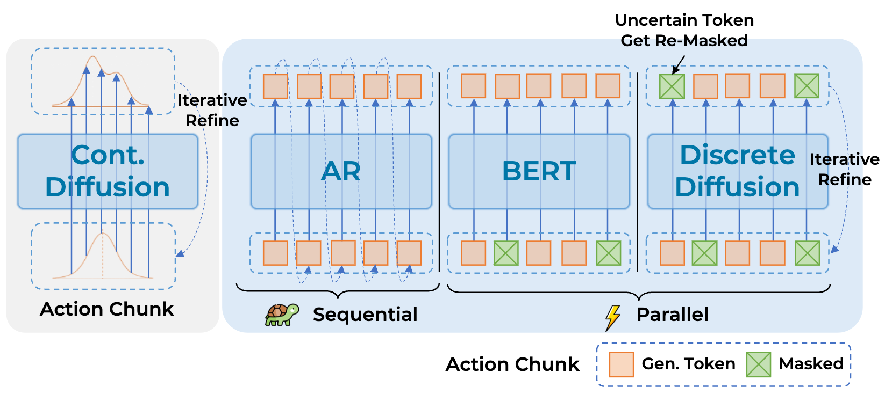
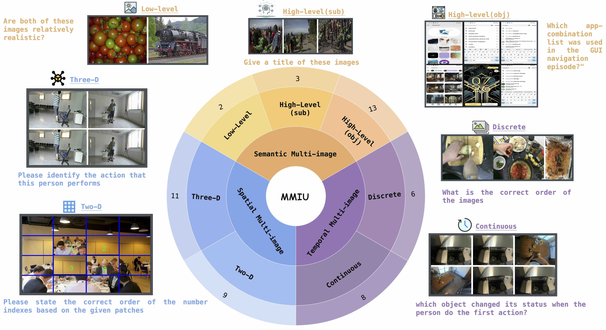

Tianshuo Yang | 杨天硕Ph.D. StudentDepartment of Computer Science The University of Hong Kong Email: zjuyangts@gmail.com [Google Scholar][GitHub][Twitter] |

|
Short Bio
I am a second-year Ph.D. student at MMLab, The University of Hong Kong, fortunately advised by Prof. Ping Luo. Before that, I received my B.Eng. Degree and Honors Degree (Chu Kochen Honors College) from Zhejiang University. I spent a wonderful time at Shanghai AI Laboratory as a research intern, mentored by Prof. Yao Mu and Dr. Wenqi Shao.
I have experience in spatial reasoning for VLMs, 2D/3D generation, editing, and reconstruction, as well as manipulation VLA. Currently, I'm interested in embodied world models, especially action-conditioned world (video AND 3D) generation. Looking for internship opportunities, feel free to reach out.
Selected Publications
(* denotes equal contribution, and # denotes corresponding author)
Design the World
2D/3D Generation & Editing, 3D/4D Reconstruction.

Diffree enables text-only object addition by predicting where to place a new object and inpainting it with context-consistent appearance.

Lumina-T2X introduces a unified flow-based diffusion transformer framework for text-conditioned generation across images, videos, 3D views, and audio at flexible resolutions and durations.
AnyRecon enables high-quality and large-scale 3D reconstruction from sparse inputs.
Our method can reconstruct high speed and complex 4D motion with high quality.
Play with the World
Embodied reasoning and manipulation VLA.

A visual-grounded-centric hierarchical framework that explicitly decouples high-level semantic planning from low-level motor control.

Learn the World
Spatial Intelligence.

Honors
-
HKU Presidential PhD Scholarship (HKU-PS)2024
-
Outstanding Graduate of Zhejiang University2024
-
Xiaomi Scholarship2023
Academic Service
-
Conference Reviewer: CVPR, ECCV, ICLR